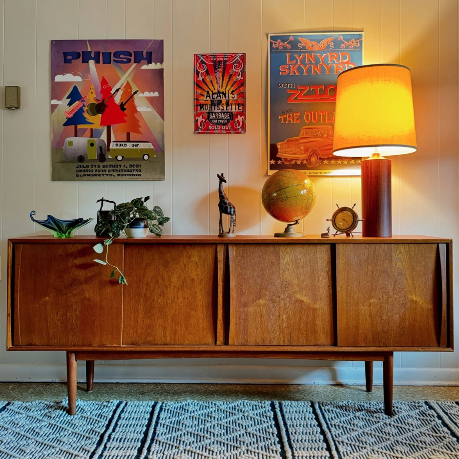
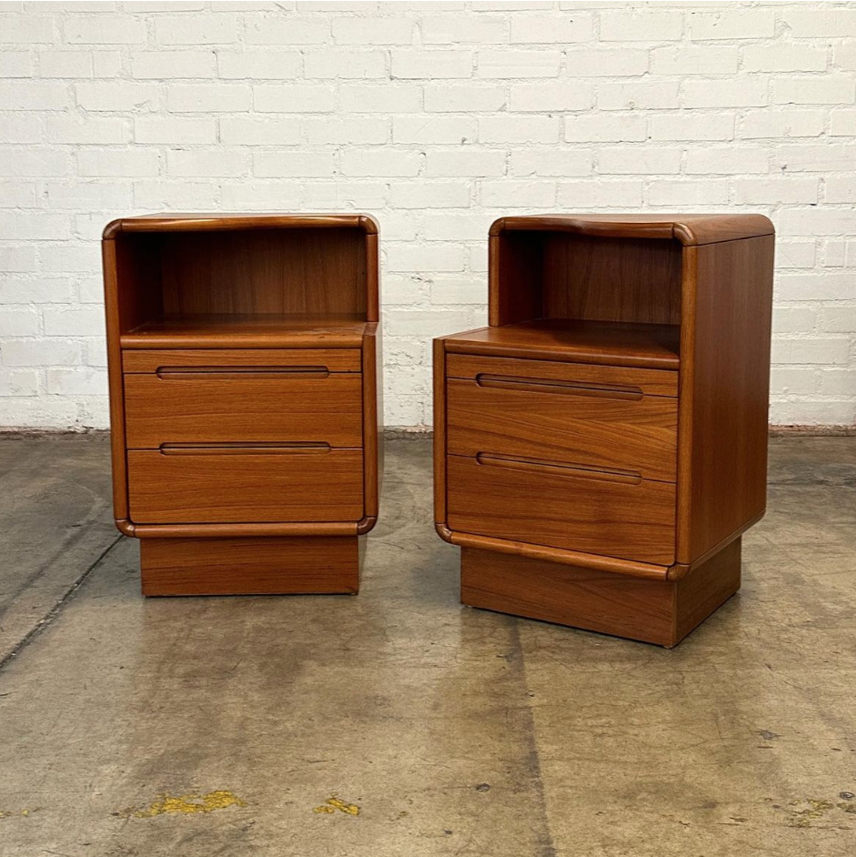
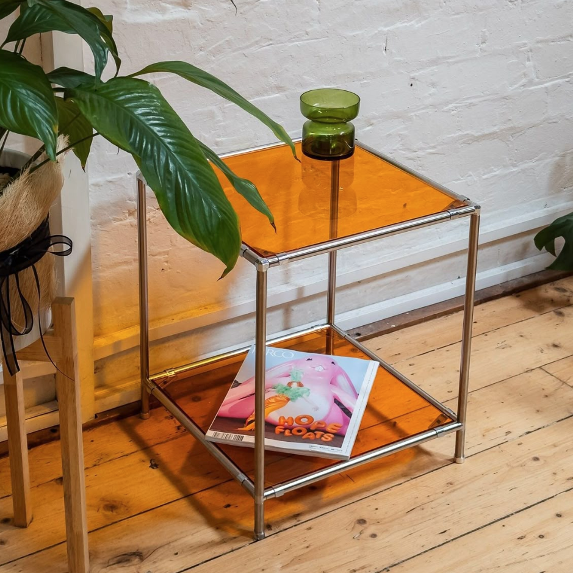
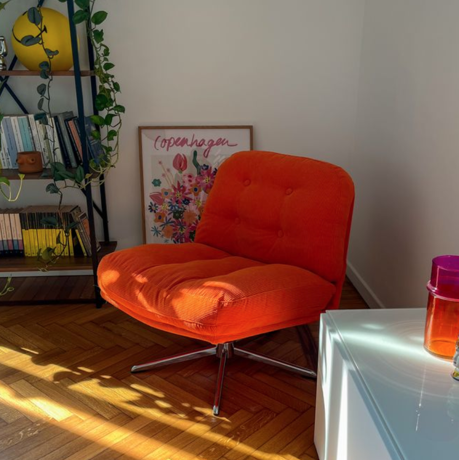

Aparador restaurado de estilo mid-century elaborado en madera natural con acabados renovados cuidadosamente a mano. Sus tonos cálidos, líneas limpias y detalles minimalistas lo convierten en una pieza ideal para espacios modernos, vintage o contemporáneos. Cuenta con compartimentos amplios para almacenamiento, perfectos para organizar vajilla, libros, decoración o artículos del hogar sin perder estética y funcionalidad. Cada restauración conserva la esencia original del mueble mientras incorpora un aspecto más moderno y elegante.

Par de burós restaurados con inspiración mid-century y acabados en madera natural de tono cálido. Su diseño compacto y elegante destaca por las esquinas curvas, líneas limpias y detalles minimalistas que aportan un estilo moderno y atemporal a cualquier habitación. Cada pieza cuenta con dos cajones amplios para almacenamiento y un compartimento superior abierto, ideal para libros, decoración o artículos de uso diario. Su estructura funcional los convierte en una excelente opción para recámaras, estudios o espacios pequeños que buscan combinar estética y practicidad. Restaurados cuidadosamente a mano para conservar la esencia original del mueble mientras se moderniza su apariencia y acabado.

Mesa auxiliar de diseño contemporáneo con estructura metálica y superficies en acrílico translúcido color ámbar. Su estilo ligero y minimalista la convierte en una pieza ideal para complementar salas, recámaras o espacios creativos con un toque moderno y artístico. Cuenta con doble nivel de almacenamiento para decoración, libros o accesorios, combinando funcionalidad y estética en un formato compacto. Su acabado translúcido aporta calidez y personalidad sin sobrecargar el espacio.

Sillón vintage restaurado con tapizado en textura acanalada color naranja intenso y base metálica giratoria. Inspirado en el diseño retro de los años 70, esta pieza aporta personalidad, color y carácter a cualquier espacio moderno o creativo. Su asiento amplio y acolchonado brinda comodidad mientras su silueta curva crea una apariencia acogedora y sofisticada. Ideal para salas, estudios o rincones de lectura que buscan un acento visual único. Restaurado cuidadosamente para conservar su esencia original mientras se adapta a interiores contemporáneos.
